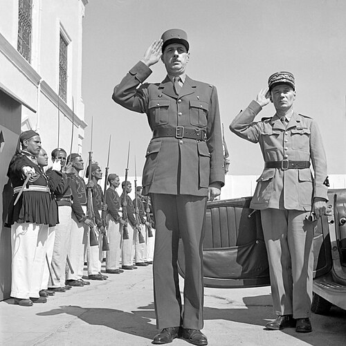

Charles de Gaulle
General que encabezó la Francia Libre y la resistencia contra la ocupación alemana. Símbolo de la Francia que no se rindió y, más tarde, fundador de la Quinta República.
Datos
| Nombre completo | Charles André Joseph Marie de Gaulle |
|---|---|
| Nacimiento | 22 de noviembre de 1890, Lille (Francia) |
| Fallecimiento | 9 de noviembre de 1970, Colombey-les-Deux-Églises |
| Cargo | Líder de la Francia Libre (1940-1944); presidente de Francia (1959-1969) |
| Rama | General de brigada del Ejército francés |
Orígenes y formación militar
Charles de Gaulle nació en 1890 en Lille, en una familia católica, patriótica y culta. Desde joven mostró una fuerte vocación militar y un profundo sentido del deber y de la grandeza de Francia. Ingresó en la prestigiosa academia de Saint-Cyr y combatió en la Primera Guerra Mundial, donde resultó herido varias veces y fue hecho prisionero por los alemanes tras la batalla de Verdún; en cautividad intentó fugarse en repetidas ocasiones.
De estatura imponente y carácter reservado y orgulloso, De Gaulle era un intelectual de las armas, autor de ensayos sobre estrategia y liderazgo.
Teórico de la guerra blindada
Durante el periodo de entreguerras, De Gaulle defendió con insistencia la modernización del ejército francés y, en particular, la creación de unidades acorazadas móviles y profesionales, en lugar de confiar en la defensa estática de fortificaciones como la Línea Maginot. Sus ideas, expuestas en obras como Hacia el ejército profesional, fueron en gran medida ignoradas por el alto mando francés, pero fueron estudiadas con interés al otro lado del Rin. La campaña de 1940 le daría trágicamente la razón.
La derrota de 1940 y el llamamiento del 18 de junio
Durante la Batalla de Francia, De Gaulle mandó una división acorazada y protagonizó algunos de los pocos contraataques franceses con cierto éxito. Ascendido a general de brigada, fue nombrado subsecretario de Guerra en los últimos días del gobierno. Cuando la mayoría de los dirigentes franceses, con el mariscal Pétain a la cabeza, optaron por pedir el armisticio, De Gaulle se negó a aceptar la derrota.
Exiliado en Londres, el 18 de junio de 1940 lanzó por la radio de la BBC un histórico llamamiento a los franceses para que continuaran la lucha, afirmando que "Francia ha perdido una batalla, pero no ha perdido la guerra". Con ese gesto, casi solo y sin apenas medios, encendió la llama de la Francia Libre.
Al frente de la Francia Libre
De Gaulle dedicó los años siguientes a una doble batalla: contra la Alemania nazi y el régimen colaboracionista de Vichy, y por el reconocimiento de la Francia Libre como aliada de pleno derecho. Con enorme tenacidad y no pocos roces con Churchill y Roosevelt —que a menudo desconfiaban de él—, fue reuniendo territorios coloniales, tropas y apoyos.
Unificó bajo su autoridad a la dispersa resistencia interior francesa, gracias en parte a la labor de figuras como Jean Moulin, y creó las instituciones de una Francia combatiente. Las fuerzas francesas libres participaron en numerosos frentes, desde África hasta Italia y, finalmente, en la propia liberación del país.
La liberación de Francia
Tras el desembarco de Normandía en 1944, las tropas aliadas y francesas avanzaron por Francia. De Gaulle maniobró para que fueran unidades francesas las que entraran en primer lugar en la capital, y el 25 de agosto de 1944 desfiló triunfalmente por un París liberado ante multitudes entusiasmadas, consolidando su autoridad como líder indiscutible de la Francia renacida y evitando tanto un vacío de poder como los planes aliados de administrar el país.
La posguerra y la Quinta República
De Gaulle presidió el gobierno provisional de la posguerra, pero dimitió en 1946 en desacuerdo con el sistema de partidos de la Cuarta República. Se retiró de la vida política durante años. Regresó al poder en 1958, en plena crisis de la guerra de Argelia, y fundó la Quinta República, con una presidencia fuerte, de la que fue su primer presidente hasta 1969. Marcó la política francesa e internacional de su tiempo con una visión de grandeza e independencia nacional.
Legado y valoración histórica
Charles de Gaulle es una de las figuras centrales de la historia de la Francia contemporánea. Durante la guerra encarnó el honor nacional y la negativa a aceptar la derrota y la colaboración; después, refundó las instituciones de su país. Su nombre está unido al orgullo y la independencia de Francia, y su llamamiento del 18 de junio se conmemora como un momento fundacional de la resistencia. Su figura, autoritaria y visionaria a la vez, sigue siendo objeto de admiración y debate.
← Volver a Líderes